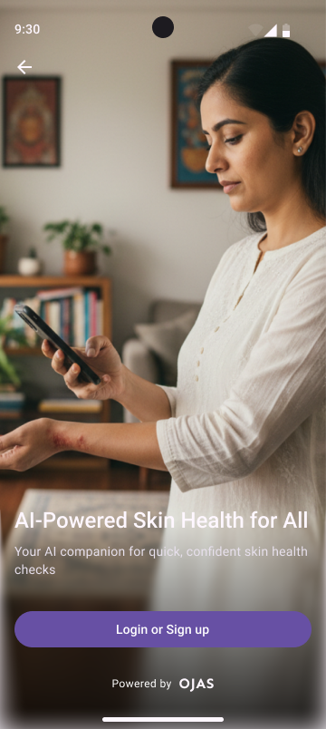
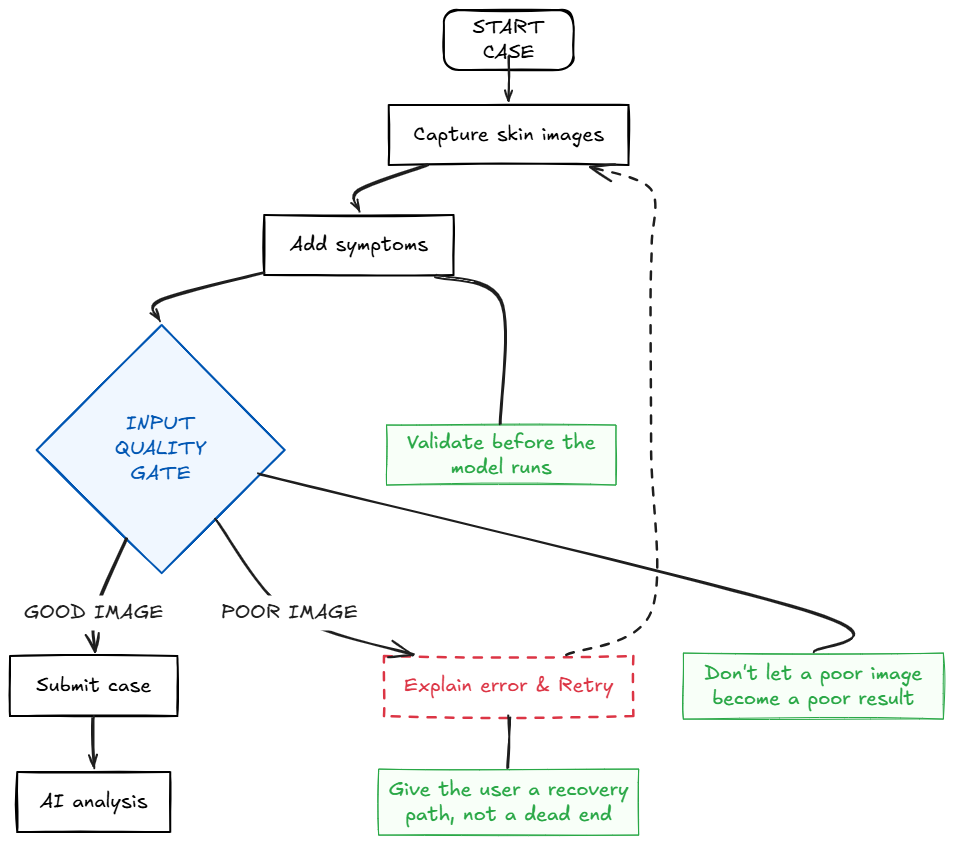
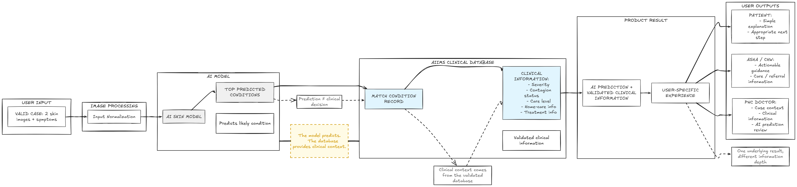
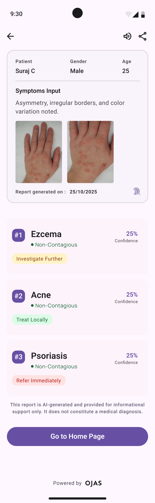
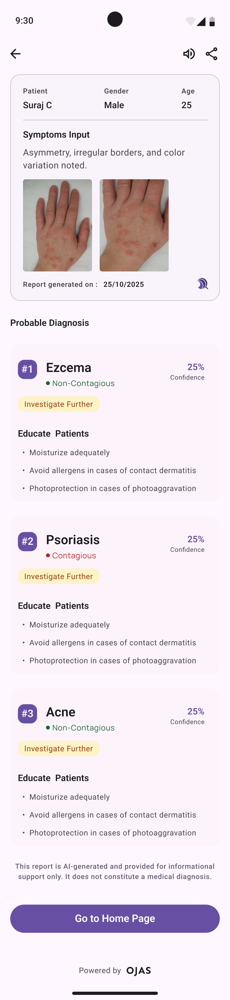
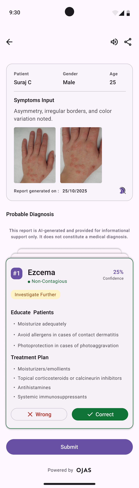
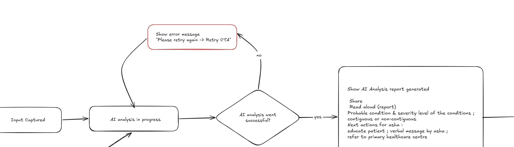

One AI skin result that three different people have to trust
A skin-screening app for Indian users. The interesting part wasn't the prediction. It was connecting a patient, an ASHA worker and a PHC doctor around the same result, in three very different settings.
This project is confidential, so this page is the short version. If you're a hiring manager, reach out and I'll walk you through the full case study.
highlights
One result, three people, three settings
A patient at home, an ASHA worker in the field and a PHC doctor at a desk all act on the same skin result, and in the real system information gets lost at every handoff. My research was about understanding why before touching anything.
retrospective
The prediction was the easy part
What decided whether Indus Derma worked was not model accuracy. It was whether a result written for one reader still made sense to the next one, and whether the system was honest when it did not know. Designing the handoffs and the uncertain cases is what turned a prediction into something three people could act on together.
A screening result is only as useful as the weakest handoff it has to survive.
Want the full story?
One AI skin result that had to work for three very different people
A skin-screening app for Indian users. The interesting part wasn't the prediction. It was connecting a patient, a frontline health worker and a doctor without losing the case between them.

the short version
The context
Skin is the one condition you can see from across the room, and still the hardest one to get looked at.
In much of India, that first look happens late or not at all. Dermatologists cluster in cities, and a person who notices something on their skin often doesn't know if it is serious, whether to travel for it, or who to ask.
The first person they reach is not a specialist. It is an ASHA worker on a household visit, or a doctor at a primary health centre with a queue outside. That chain already works, in its own way. Anything digital enters it as a guest.
Could an AI first look reach people earlier without pulling the existing chain apart?
The question underneath every decision that follows.
The problem
Most skin conditions have no single test. Diagnosis starts with someone looking at the skin and making a judgement.
Indus Derma puts that first look in the patient's hand. Photograph the skin, get a probable condition and a clear next step. The team trained its own model for Indian and regional skin conditions. My job was the experience around that result.
The system I was designing for
One case can pass through three people who never share a room, a screen or a vocabulary. Before designing anything, I had to hold all three in view at once.
The same case had to stay consistent. The experience could not be identical.
Built for everyday Indian users too, not only frontline workers. The patient is a real user, not a data source.
What the research revealed
I studied how existing skin and health apps work: where the data comes from, how doctors are involved, how results are scored.
what kept coming up
Don't disturb the existing workflow. Understand it first, then fit the technology into it.
The research goal I kept the whole project honest against.
An ASHA already looks at skin and already decides whether to refer. The technology had to sit inside that, not on top of it.
how each finding became a decision
The UX challenge: connecting three contexts
How do you connect three people in different contexts, and keep the information understandable, useful and safe?
at every arrow, a bit of the case falls out
The model gives one result. But the patient, the ASHA and the doctor cannot read the same screen. Reframing it as one result travelling across handoffs, rather than a prediction firing once, is what made the rest of the design fall into place.
One underlying result had to work in three places, without anyone downstream rebuilding the case from scratch.
the shape of the work
The experience had four layers
Not a framework, just the four connected parts I worked across. This is the map; the evidence for each one follows below.
I wasn't designing one screen or one user journey. I was connecting these four layers so the case could move from input to action without losing context.
UX decisions
Don't make the CHW interpret the AI
What I found
The ASHA/CHW works from experience and referral protocols, not technical model outputs.
UX decision
Interpreting the AI is not her job.
Why
The product should support her existing role, not add a new clinical responsibility.
Where it appears
The result becomes plain condition information, care guidance and a referral direction.
Keep the case together across handoffs
What I found
Information gets fragmented when a case moves between people.
UX decision
The case travels with the patient instead of being rebuilt at each stage.
Why
The PHC doctor should receive the context already collected, not start again.
Where it appears
Images, symptoms and case info carry forward into the doctor's view.
Same result, different depth
What I found
Patient, CHW and doctor have different responsibilities and health-literacy levels.
UX decision
Don't show everyone the same screen.
Why
The underlying information can stay consistent while the depth changes to fit each role.
Where it appears
Patient gets simpler language, CHW gets actionable guidance, doctor gets clinical depth.
Design uncertainty into the main journey
What I found
Poor images, low confidence and connectivity gaps can all block a reliable result.
UX decision
Treat failure and uncertainty as normal paths, not hidden edge cases.
Why
Here, a failure with no clear next step can stop the whole journey.
Where it appears
Retry, refusal, referral and escalation are explicitly mapped in the flow.
Flows & interaction architecture
Four moments carried the real design weight. Each is a different kind of problem, so each is drawn differently.
Getting a usable case into the system
interactionthe question → can the user get a usable case in?
Before the AI runs, the worker has to get one clean case in, attached to the right patient. Most of the tap-to-tap interaction lives here.
Everything captured next stays attached to one record.
Permission is asked up front, not mid-task. Symptoms can be typed or spoken.
Zoomed-out and zoomed-in, each retried with a specific reason.

What's happening
The worker finds or creates the patient, picks camera or gallery, and the app checks framing and whether skin is visible before it accepts a photo.
UX decision
Catch a weak input at capture, not after a wrong result. Voice input keeps the same step usable for low-literacy users.
From image to clinical context
system logicthe question → how does the system turn that input into clinical context?
Not a screen flow. This is what the product does with an input, and where responsibility for the clinical meaning actually sits.

The model proposes likely conditions with a confidence figure. It does not decide how serious the case is. Severity, contagion and care guidance are attached from the validated AIIMS database, so the clinical meaning always comes from a clinical source.
One result, different actions
information hierarchythe question → how should different users understand and act on the same result?
One result, three depths. The same case, shown at the level each person can actually act on.
![Information hierarchy: one skin case (images plus symptoms) becomes an AI predicted condition, then validated clinical context, which splits into three views of the same underlying result at different information depth. Patient understands (simple condition info, plain-language explanation, what to do next, seek help); ASHA/CHW acts (probable condition, relevant care information, contagion/guidance, refer or continue); PHC doctor assesses (case context, predicted conditions, clinical information, review AI and judgement).](assets/tvak/flow-3-hierarchy-diagram.png)



The doctor has the final say
The doctor's view ends in a Correct or Wrong choice before submit. The clinical decision stays with the clinician, and each response becomes structured feedback that can support future evaluation of the model. No automatic retraining, just a clear place for a clinician to decide.
Keeping the case intact across the handoff
workflow / handoffthe question → how does the case move between people without losing context?
When the worker refers, the whole case has to reach the PHC doctor intact, not get re-typed. This is one journey cropped from the larger map: the referral seam.

What's happening
The worker acts on the report: educate the patient, or refer. On referral the case moves to the PHC doctor.
UX decision
The doctor opens a complete case, not a blank form. Nothing captured upstream is asked for twice. (Decision 02)
These four are cropped from one much larger flow. Open the full flow ↗
How we defined success
These are targets we set to decide whether the product was good enough to trust, not results we've hit. Writing them down early kept "safe" and "usable" from becoming opinions.
Missing a serious case is the failure we most needed to design against.
What I learned / what I'd do differently
what I learned
Designing across contexts is different from designing individual screens. The hard part was the handoff, not one individual view.
Working with AI also changed how I think about UX. Designing for uncertainty is as important as designing for a successful prediction.
what I'd do differently
Get in front of real ASHA workers earlier. My personas and workflow understanding came from research, published material and journey mapping, not direct fieldwork. That's the biggest validation gap I'd close.
I'd also test whether the confidence language stays clear after translation into Indian languages before committing to it.